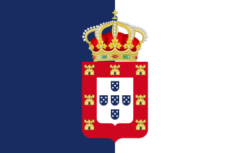
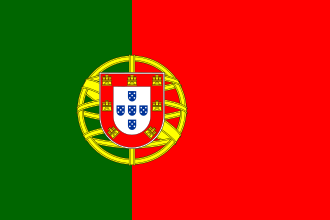

Regno (fino al 1910) Prima Repubblica (1910-1926)
Estado Novo (1926-1974)
Prima Repubblica (1910-1926)
Estado Novo (1926-1974)

Repubblica (1974-oggi)Seleziona il periodo

Regno (fino al 1910)
Prima Repubblica (1910-1926)
Estado Novo (1926-1974)

Repubblica (1974-oggi)